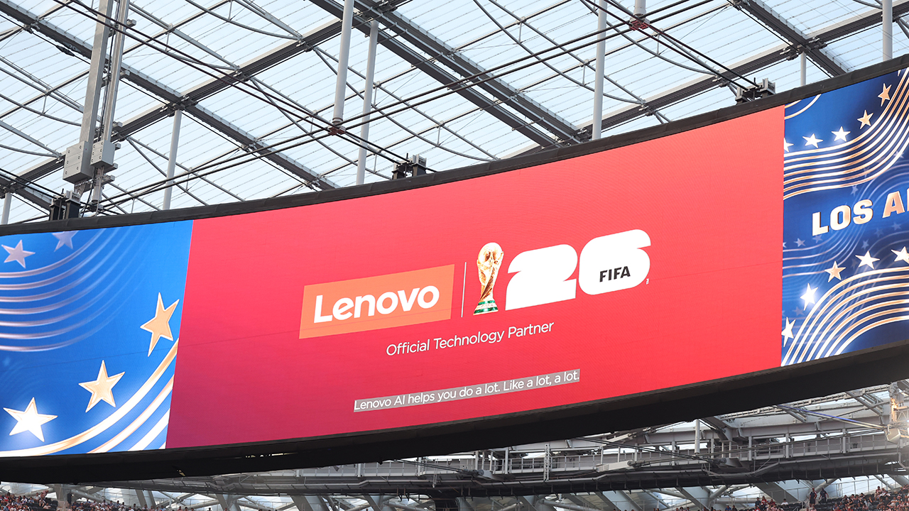
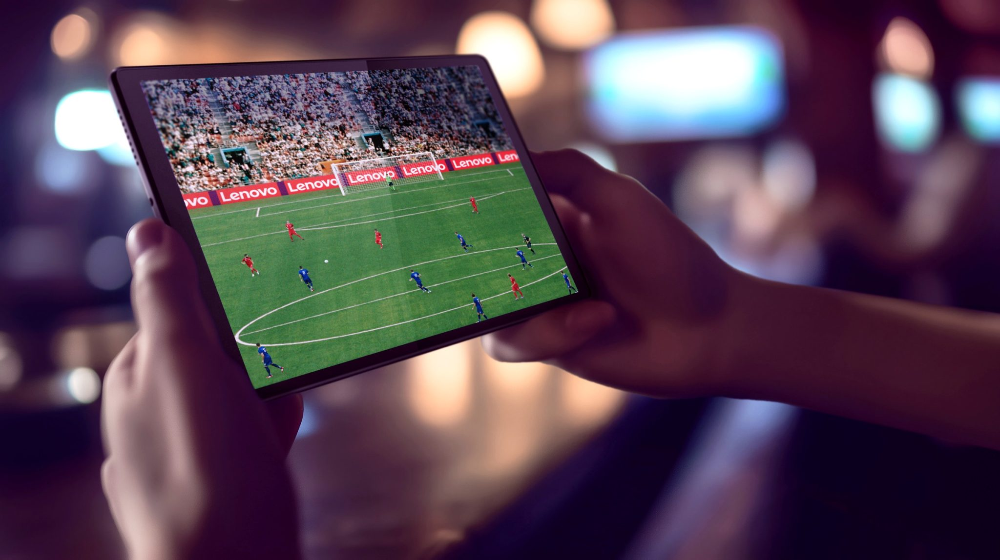
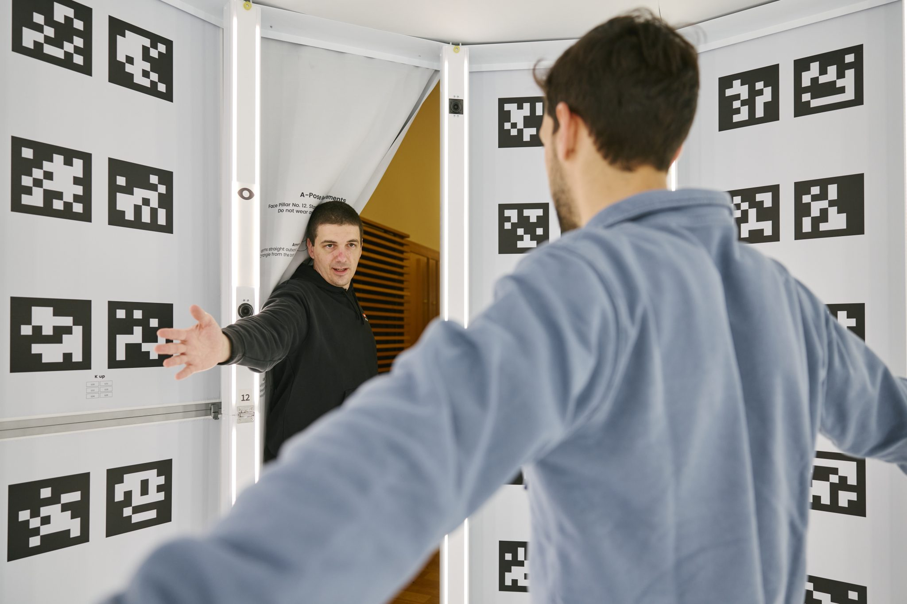

案例发生了什么


联想将 FIFA 全球合作伙伴身份放在“技术底座”而非单纯品牌露出上：用战术分析、数据与 AI 能力证明其可以服务球队、裁判和球迷三类对象。
MARKETING KNOWLEDGE ROUTER · 营销知识路由器
营销启发卡
用三张卡片保留最值得记住、讨论和迁移的部分。 卡片底部按主题连接全站相关案例、经典方法与深度文章。
核心动作
以 Football AI Pro 连接球队战术分析与企业 AI 能力；把后台技术能力转写为球迷可理解的互动与内容。
传播与商业机制
以“FIFA 全球合作伙伴 / 技术”为资源起点，进入官方赛事资产、品牌内容、产品/服务、零售或会员触点；结果优先观察权益可见度、用户参与、产品/服务使用与商业转化的分层变化，不把曝光直接等同于销售。
可复用的方法
技术赞助的叙事起点不是参数，而是赛事里谁因此做得更好。
适用条件、风险与证据
- 需要明确权益能被调用的范围，而不是只记录赞助级别。
- 至少准备内容与商业两条承接线，防止资源只在比赛画面里出现。
- 复盘时区分赛事可见度、用户参与和实际业务结果，不能相互替代。
核验记录可将已核动作作为内部判断基础；涉及投放规模、销售结果或合作细则时，仍应以品牌、平台或权利方的一手发布为准。 当前记录：已核（FIFA + 联想官方 + 赛事现场报道）；素材状态：已归档 7 张赛场围挡、场馆身份与官方技术执行素材。
品牌与权威来源物料
这里只展示可追溯到品牌、权利方、官方账号或明确注明原始出处的真实物料；研究图卡不计入案例图片。


资料与来源
官方资料、结果数据与下一步
已验证事实
- FIFA 官方公告确认 Lenovo 是 Official FIFA Technology Partner，并以 FIFA Partner 的顶级层级覆盖 2026 世界杯与 2027 女足世界杯。
- 本页已把实际比赛中的完整 Lenovo 场边 LED、场馆环形大屏“Official Technology Partner”身份、联想官网比赛画面放到案例最前面，不再以微博截图承担主视觉。
- 联想官方资料同时留存移动设备观赛视觉与球员 3D 扫描执行图，说明该合作既有高可见品牌露出，也有赛事技术交付内容。
可追溯的结果
- 当前图片能够验证合作身份、场边可见度和部分技术执行，但尚无统一的一手口径披露各场次 LED 露出时长、转播可见秒数、注意度或品牌归因提升。
原始来源
- FIFA · 2024-10-15Lenovo named Official FIFA Technology Partner
- Lenovo StoryHub · 2026-06-12Opening goal captured through Referee View and Lenovo AI technology
- Lenovo StoryHub · 2026-06-09FIFA World Cup 26 Lenovo AI press kit
- PetaPixel · 2026-06-19World Cup match photography with visible Lenovo pitch LED
- Fox Business · 2026-07-08Lenovo AI at the FIFA World Cup
来源链接优先指向品牌、权利方或持权媒体官方页面；品牌自述数据按原始定义记录，不视作独立审计结果。